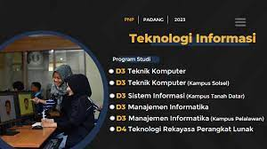

Profile Ti
Jurusan Teknologi Informasi memiliki memiliki berbagai macam prodi lain, seperti : teknik komputer, manajemen informatika, teknologi rekayasa perangkat lunak
Selamat Datang
Selamat Datang di Jurusan Teknologi Informasi menghasilkan tenaga professional tingkat ahli madya di bidang Teknologi Informasi, khususnya pengelolaan informasi berbasis komputer sehingga mampu bekerja di berbagai instansi, perkantoran organisasi dan bisnis modern.